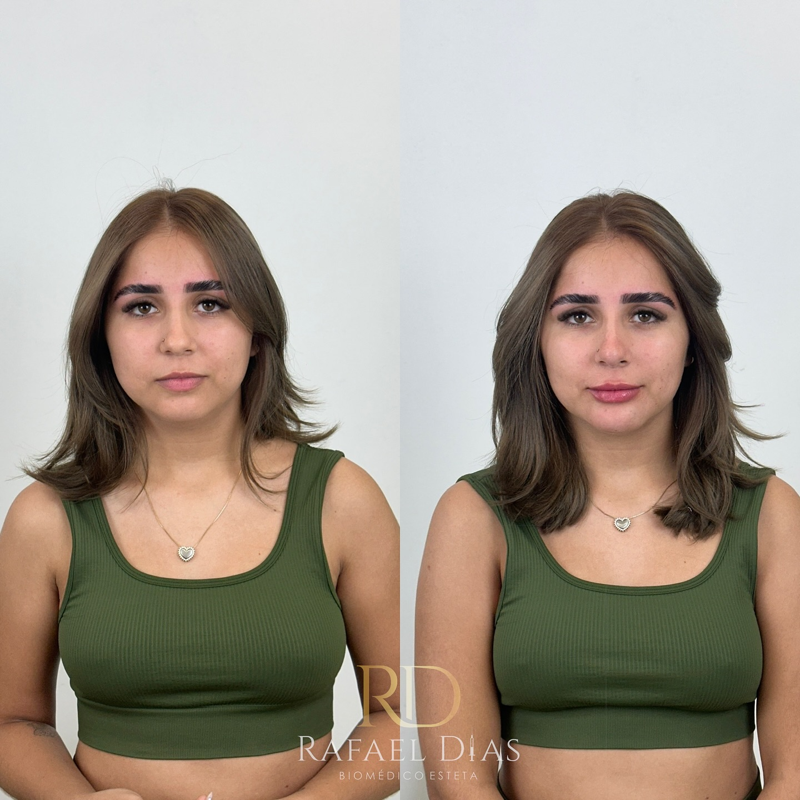
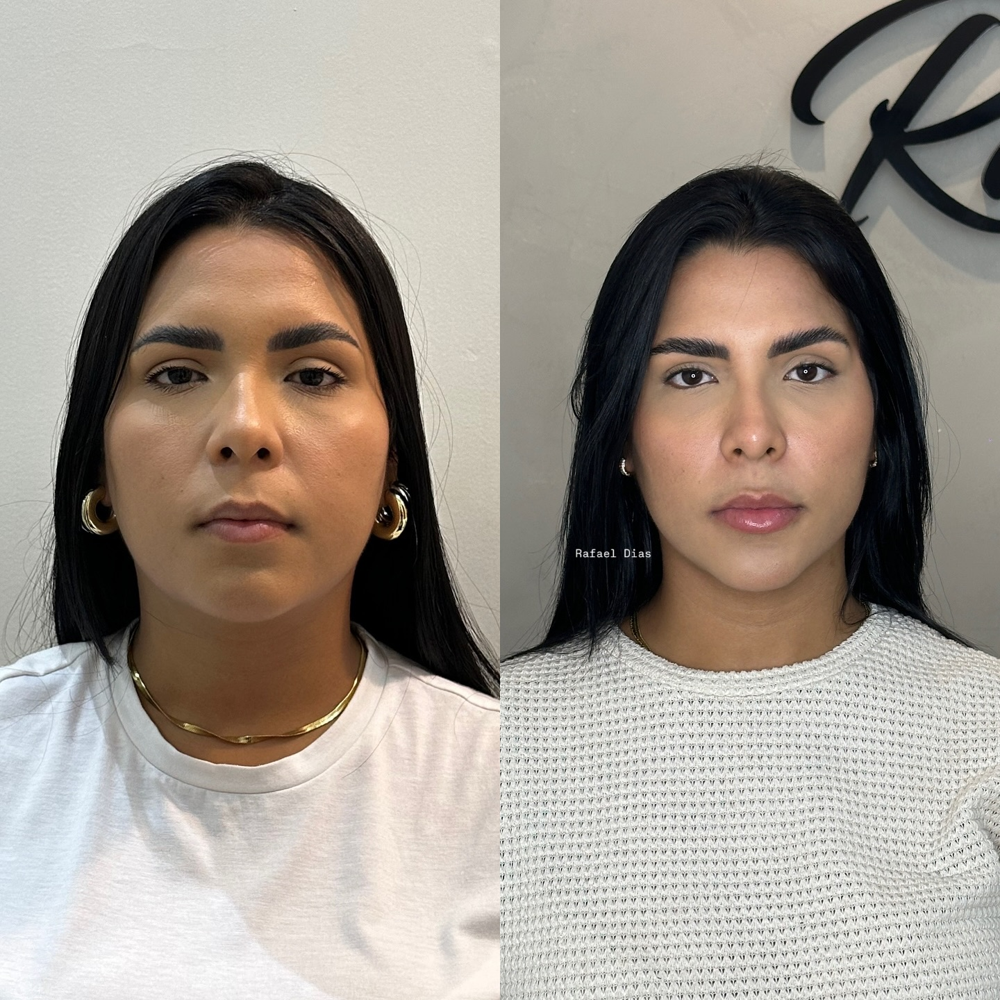
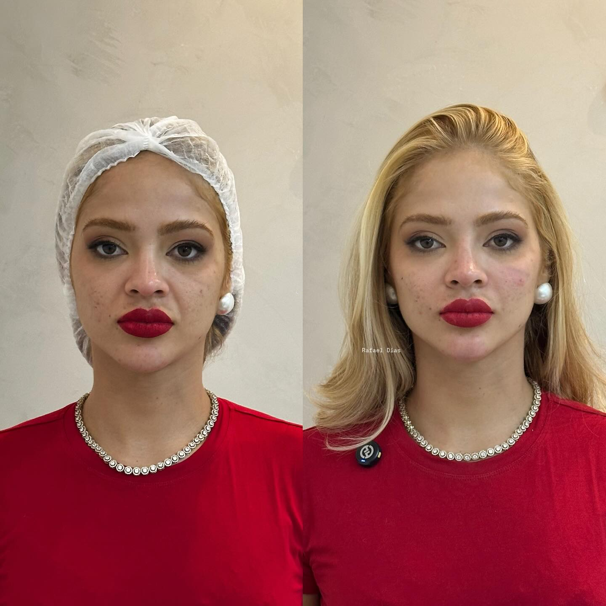
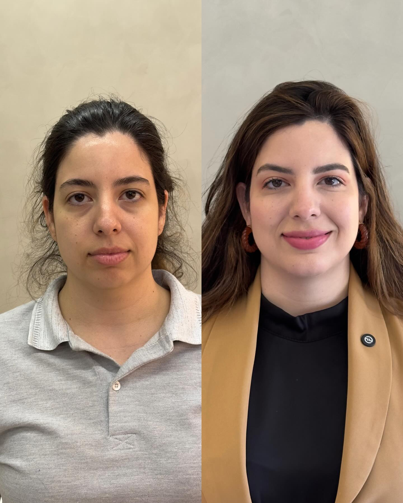
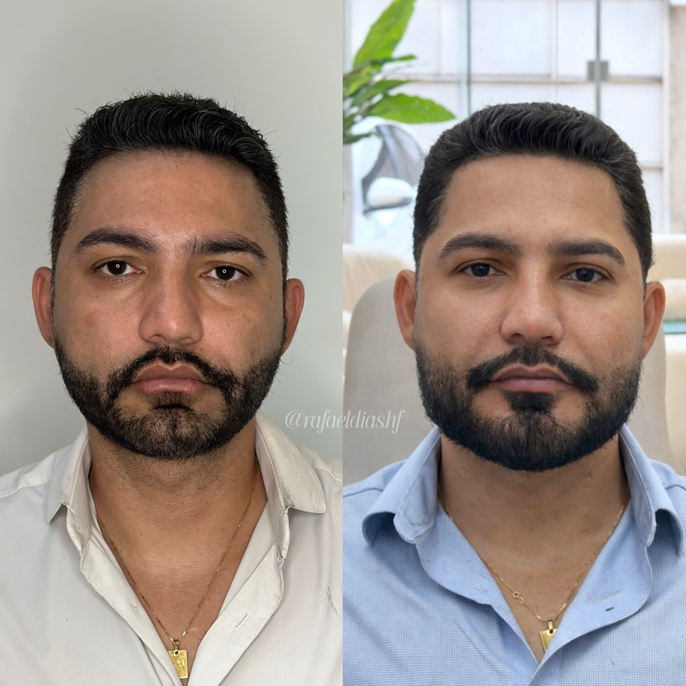

Parauapebas e Canaã dos Carajás
Quando você ama seu reflexo, a felicidade flui.
O full face é planejado para acompanhar a imagem que você quer reconhecer no espelho, com critério e uma avaliação individual.
Casos clínicos
Cada rosto pede uma combinação diferente.
Veja casos de full face com objetivos distintos. As imagens ajudam a conhecer o trabalho, mas não antecipam o resultado de um futuro procedimento.





Relato após o full face
Fazer o Full Face foi uma das melhores decisões da minha vida.
Depoimento espontâneo publicado no perfil profissional do Dr. Rafael Dias. Cada experiência é individual e os resultados podem variar.
Uma mudança com intenção
A sua melhor fase pode começar no espelho.
Uma conversa clara sobre o que você deseja, um plano individual e escolhas feitas com segurança em cada etapa.
Quem realiza o full face
Instituto Rafael Dias
Atendimento dedicado à harmonização facial e à construção de planos que respeitam seus objetivos.
Na avaliação para full face, a equipe considera as proporções do rosto, suas referências e a mudança que você deseja. A proposta é explicada com clareza, incluindo possibilidades, limites e cuidados necessários.
Como o procedimento é definido
O full face começa na avaliação.
Não existe um rosto padrão. O plano depende do exame presencial, da anatomia facial e do que o paciente busca mudar.
- 01 Exame do rosto e das proporções faciais
- 02 Definição das mudanças possíveis
- 03 Orientações para o planejamento e os cuidados
Quer saber se o full face faz sentido para o seu caso?
Fale com a equipe do Instituto Rafael Dias para consultar horários e receber as informações da avaliação.
Atendimento em Parauapebas e Canaã dos Carajás · Pará